Teória 5: Správa chýb, výnimky¶
V tejto časti sa budeme venovať spôsobom, akými Java pomocou výnimiek spravuje chyby v programoch.
Výnimky¶
V Jave sa podobne ako v Pythone na spravovanie chýb používajú výnimky. Výnimka (anglicky exception) je objekt, ktorý reprezentuje chybový alebo nečakaný stav počas behu programu.
Podľa toho, na akom mieste v hierarchii tried výnimka je, sa určí jej skupina. Výnimky založené na triede Error sú typu Error a výnimky založené na triede RuntimeException sú Unchecked Exceptions. Všetky ostatné typy sa berú ako Checked Exceptions. Nasledovný diagram ukazuje hierarchiu tried výnimiek.

Hierarchia tried výnimiek
Zachytenie výnimiek¶
Výnimky vieme zachytiť a ošetriť v tzv. try-catch bloku.
Príklad ošetrenia výnimky, ktorá by ukončila program, ak by sme ju nezachytili:
try {
int a = 10;
int b = 0;
int result = a / b; // toto spôsobí ArithmeticException
System.out.println("Výsledok: " + result);
} catch (ArithmeticException e) {
System.out.println("Chyba: nemožno deliť nulou!");
System.out.println("Detail chyby: " + e.getMessage());
}
Zachytiť viem aj viacero druhov výnimiek. A to tak, že uvediem viacero blokov catch
Zachytávanie viacerých typov výnimiek pomocou multi-catch
Java nám pre uľahčenie ponúka aj možnosť zachytiť viacero typov výnimiek v jednom bloku catch. Ide však o trochu viac komplikovaný spôsob a odporúčame ho používať až skúseným programátorom. Viacero typov v bloku catch oddelíme znakom |
Okrem blokov catch môžem zadať aj tzv. blok finally. Kód v tomto bloku sa vykoná vždy po ukončení bloku try-catch, bez ohľadu na to, či skončil normálne, alebo bola vyhodená výnimka. Tento blok sa používa pre prípady, kedy potrebujeme vykonať nejaké dodatočné upratovanie, napríklad zatvoriť otvorené súbory alebo sieťové pripojenia.
Deklarovanie checked výnimiek¶
Ak niektorá časť kódu môže v našej metóde vyhodiť checked výnimku a sami ju neošetrujeme, musíme túto výnimku uviesť v deklarácii metódy. Checked výnimky sú považované za vážnejšie chyby a preto musíme ich explicitne uviesť, ak ich nezachytávame. Ináč kompilátor vyhodí chybu a my nebudeme schopný program spustiť. Deklarácia výnimiek sa robí pomocou kľúčového slova throws hneď za argumentami metódy.
public void readFile(String filePath) throws IOException {
BufferedReader reader = new BufferedReader(new FileReader(filePath));
String line = reader.readLine();
}
Každý, kto používa túto metódu, bude musieť ošetriť túto checked výnimku, alebo ju tak isto deklarovať vo svojich metódach. Tým sa predíde situácii, kedy by sme na ošetrenie výnimky zabudli.
Zadekladovať vieme aj viacero výnimiek naraz, stačí ak ich oddelíme čiarkou. Pomocou throws je dovolené zadeklarovať aj unchecked výnimky, ale nie je to nutné. Robí sa to hlavne kvôli dokumentácii.
Vyhadzovanie výnimiek¶
Ak chceme vo svojom kóde vyhodiť výnimku, robíme tak pomocou príkazu throw.
Pri vytváraní inštancie (objektu) výnimky je vhodné uviesť krátku správu, aká chyba nastala. Pomôže to pri debugovaní.
public static double divide(double numerator, double denominator) {
if (denominator == 0) {
throw new IllegalArgumentException("Deliteľ nemôže byť 0.");
}
return numerator / denominator;
}
Vyhodiť výnimku môžem aj v bloku catch, ak pri ošetrení výnimky zistíme, že ju ošetriť nevieme. Taktiež pomocou throw v bloku catch vieme zmeniť typ výnimky, ktorá sa vyhadzuje, napríklad namiesto checked výnimky vyhodíme unchecked. Pri takomto 'zabalení' výnimky do novej výnimky vieme tú pôvodnú pripojiť ku novej. Väčšinou sa to robí spôsobom, že ju pri vytváraní výnimky uvedieme ako druhý argument konštruktora.
import java.io.BufferedReader;
import java.io.FileReader;
import java.io.IOException;
public static String readFile(String filePath) {
try {
BufferedReader reader = new BufferedReader(new FileReader(filePath));
return reader.readLine();
} catch (IOException e) {
// Zabalíme checked výnimku do unchecked
throw new RuntimeException("Chyba pri čítaní: " + filePath, e);
}
}
Kedy použiť checked výnimku¶
Ak vyhadzujeme výnimky, je na nás, či použijeme checked alebo unchecked výnimku. Checked výnimky sa zvykú používať v nasledovných situáciách:
- Výnimku je možné očakávať a rozumne riešiť (napr. chýbajúci súbor, nedostupná sieť, chyba pri čítaní databázy.) Tieto situácie sú bežné a volajúci by mal mať šancu na nápravu (skúsiť iný súbor, upozorniť používateľa, logovať)
- Výnimka nie je chyba programátora, ale súčasť domény problému (
ParseExceptionpri parsovaní dátumu,SQLExceptionpri práci s databázou). Tu sa očakáva, že dáta môžu byť zlé alebo externý systém môže zlyhať, a program s tým musí vedieť počítať - Chceme donútiť volajúceho, aby situáciu ošetril. Programátor, ktorý volá túto metódu, nemôže ignorovať možnosť chyby
Checked výnimky sa nehodia v prípade
- Ak ide o programátorské chyby (napr.
NullPointerException,IllegalArgumentException) - Ak by deklarácia spôsobila príliš veľa boilerplate kódu a zhoršila by čitateľnosť
- Ak je komplikované výnimku správne ošetriť
V praxi však 99.9% programátorov používa unchecked výnimky, keďže je to jednoduchšie. Unchecked výnimky má zmysel používať, ak vytvárame knižnicu pre iných programátorov.
Učím sa s pomocou umelej inteligencie
Som študent strednej školy, učím sa Javu. Vytvor zoznam najčastejších checked a unchecked výnimiek s krátkym vysvetlením, kde sa používajú
Automatické zatvorenie zdrojov¶
import java.io.BufferedReader;
import java.io.FileReader;
import java.io.IOException;
public static void main(String[] args) {
String filePath = "example.txt";
// Try-with-resources: BufferedReader sa automaticky zatvorí
try (BufferedReader reader = new BufferedReader(new FileReader(filePath))) {
String firstLine = reader.readLine();
System.out.println("Prvý riadok súboru: " + firstLine);
} catch (IOException e) {
System.out.println("Chyba pri čítaní: " + e.getMessage());
}
}
Odporúča sa použiť try-with-resources namiesto finally vždy, ak je to možné.
Môžeme dokonca uviesť viacero takýchto zdrojov, ktoré sa majú automaticky zavrieť, ale musíme ich jeden od druhého oddeliť bodkočiarkou.
Pokročilé techniky (dobrovoľné učivo)
Ak používame try-with-resources, môže sa stať, že pri chybe a vyhodení výnimky sa zdroj nepodarí úspešne zatvoriť a vyhodí sa ďalšia výnimka, ktorá signalizuje chybu zatvorenia zdroja. Teda nastala situácia, kedy máme naraz 2 výnimky.
V takejto situácii Java zoberie výnimku vyhodenú v bloku kódu a tú zoberie ako hlavnú. Všetky ostatné výnimky, ktoré nastali pri zatváraní zdrojov, sa stanú tzv. suppressed exceptions, teda sa z nich stanú 'potlačené' výnimky.
Tieto potlačené výnimky si vieme z hlavnej výnimky vytiahnuť pomocou metódy getSuppressed()
Zhrnutie teórie¶
- Výnimka (anglicky exception) je objekt, ktorý reprezentuje chybový alebo nečakaný stav počas behu programu
- Keď sa v programe stane chyba, Java "vyhodí" (anglicky throw) výnimku
- Výnimku môže zachytiť metóda v ktorej sa vyhodila výnimka. Ak ju nezachytí, výnimka stúpa vyššie
- Ak ju nezachytí
main()výnimka spôsobí ukončenie programu
- Kategórie výnimiek
- Errors - Veľmi vážne chyby programu, program by sa mal ukončiť
- Unchecked Exceptions - Bežné chyby pri programovaní
- Checked Exceptions - Vážnejšie chyby, ktoré musíme ošetriť, ináč sa náš program ani neskompiluje a nespustí
- Error sú výnimky dediace z triedy
Error - Unchecked Exceptions sú výnimky dediace z triedy
RuntimeException - Zachytenie výnimiek
- Výnimky vieme zachytiť a ošetriť v tzv.
try-catchbloku - Zachytiť viem aj viacero druhov výnimiek. A to tak, že uvediem viacero blokov
catch - Nepovinný blok
finallysa vykoná vždy po ukončení try-catch, bez ohľadu na to, či nastala chyba alebo nie
- Výnimky vieme zachytiť a ošetriť v tzv.
- Neošetrené checked výnimky musíme uviesť v deklarácii metódy pomocou
throws-
public void readFile(String filePath) throws IOException {...} - Každý, kto používa túto metódu, bude musieť ošetriť túto checked výnimku, alebo ju tak isto deklarovať vo svojich metódach
- Zadekladovať vieme aj viacero výnimiek naraz, stačí ak ich oddelíme čiarkou
-
- Vyhadzovanie výnimiek robíme pomocou príkazu
throw- Pri vytváraní výnimky je vhodné uviesť krátku správu, aká chyba nastala
-
throw new IllegalArgumentException("Deliteľ nemôže byť 0.");
- try-with-resources automatické zatvára zdroje
- Všetky zdroje, ktoré chcem zatvoriť, dáme do zátvoriek hneď za príkazom
try. - Lepšia alternatíva ako použiť blok
finally
- Všetky zdroje, ktoré chcem zatvoriť, dáme do zátvoriek hneď za príkazom
Poznámky do zošita
V zošite je potrebné mať napísané aspoň tieto poznámky:
SPRÁVA CHÝB
Výnimka (anglicky exception) je objekt, ktorý reprezentuje chybový alebo nečakaný stav programu
- Ak nastane chyba, program 'vyhodí' výnimku
- Vyhodená výnimka sa musí ošetriť v metóde kde nastala, alebo v nadradených metódach
- Ak sa neošetrí ani v main() tak program skončí chybou
Kategórie výnimiek
- Errors - Veľmi vážne chyby programu, neošetrujeme, program by sa mal ukončiť
- Unchecked Exceptions - Bežné chyby pri programovaní
- Checked Exceptions - Vážnejšie chyby, ktoré musíme ošetriť,
ináč sa program ani neskompiluje a nespustí
Zachytenie výnimiek
- Pomocou try-catch blokov
- Nepovinný blok finally sa vykoná vždy, či nastala chyba alebo nie
Neošetrené checked výnimky musíme uviesť v deklarácii metódy pomocou `throws`
Vyhadzovanie výnimiek robíme pomocou príkazu throw
Pri vytváraní výnimky je vhodné uviesť krátku správu, aká chyba nastala
try-with-resources automatické zatvára zdroje
- Zdroje, ktoré chcem zatvoriť, dám do zátvoriek hneď za príkazom `try`
- Je to lepšie ako použiť blok finally
Skúšanie a kontrola vedomostí
Na ďalšej hodine budeme kontrolovať nasledovné veci:
- Zapísané poznámky z hodiny vo vašom zošite
Okruhy otázok na test:
- Čo je výnimka
- 3 kategórie výnimiek, na čo sa používajú
- Ako sa výnimka zachytáva a ošetruje
- Význam blokov try-catch a finally
- Ako sa výnimka vyhadzuje
- Ako sa deklarujú checked výnimky v metódach
- Automatické zatváranie zdrojov s try-with-resources